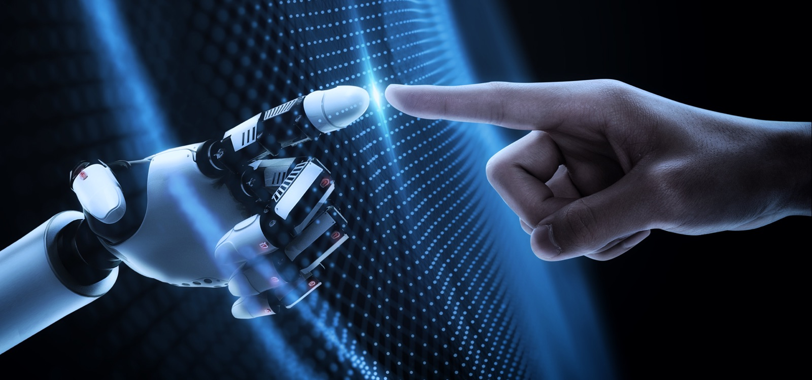

Haptics refers to the science and technology of transmitting and understanding information through touch. It encompasses a range of applications, from simple mechanical vibrations to complex tactile feedback systems.
Derived from the Greek word "haptikos," meaning "able to touch or perceive”.
Haptics formulate the key part of how humans interact with technology and are primarily part of the feedback heuristic. Common haptics we all take for granted are things like:
Haptics
Morning Alarm Clock Sound
Microwave End Alert
Oven Timer Alert
Washing Machine Cycle Completion
Dishwasher End-of-Cycle Signal
Car Seatbelt Reminder
Haptics plays a crucial role in enhancing user experiences across various fields by providing a more intuitive and engaging way to interact with digital systems and devices and with apps, we will frequently integrate haptics like:
Audio
Locking device click
Deleting items swoosh (email, messages)
Scrolling clicks
Keyboard keypress click
Sent ding 🛎️
Vibration
Incoming Call Vibration
Text Message Vibration
Notification Vibration
Subtle Keyboard Feedback
Alarm Vibration
Silent Mode Activation
Camera Shutter Vibration
Gesture Feedback
Generally it’s good to know what haptics are and how they play a vital role in human computer interaction. There is an entire field devoted to haptic design and whilst we don’t necessarily have the technology in Figma to include haptics, when you are building your portfolio websites, Framer very much includes this technology.